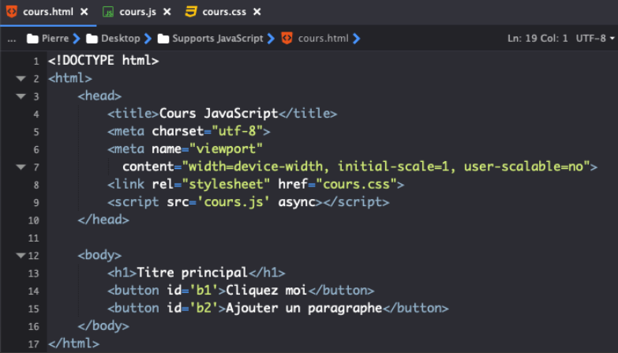

Placer le code JavaScript dans la balise ouvrante d’un élément HTML
Il est possible que vous rencontriez encore aujourd’hui du code JavaScript placé directement dans la
balise ouvrante d’éléments HTML.
Ce type de construction était fréquent à l’époque notamment pour prendre en charge des évènements
comme par exemple un clic.
Regardez plutôt l’exemple ci-dessous :
Ici, on crée deux boutons en HTML et on place nos codes JavaScript à l’intérieur d’attributs
onclick.
Le code à l’intérieur des attributs va s’exécuter dès qu’on va cliquer sur le bouton correspondant.
Dans le cas présent, cliquer sur le premier bouton a pour effet d’ouvrir une fenêtre d’alerte qui
affiche « Bonjour ! ».
Placer le code JavaScript dans un élément script, au sein d’une page HTML
On va également pouvoir placer notre code JavaScript dans un élément script qui est
l’élément utilisé pour indiquer qu’on code en JavaScript.
On va pouvoir placer notre élément script n’importe où dans notre page HTML, aussi bien
dans l’élément head qu’au sein de l’élément body.
De plus, on va pouvoir indiquer plusieurs éléments script dans une page HTML pour
placer plusieurs bouts de code JavaScript à différents endroits de la page.
Regardez plutôt l’exemple ci-dessous. Ce code produit le même résultat que le précédent :
Cette méthode est meilleure que la précédente mais n’est une nouvelle fois pas idéalement celle que
nous allons utiliser pour plusieurs raisons.
Tout d’abord, comme précédemment, la séparation des codes n’est pas optimale ici puisqu’on mélange du
JavaScript et du HTML ce qui peut rendre l’ensemble confus et complexe à comprendre dans le cadre
d’un gros projet.
De plus, si on souhaite utiliser les mêmes codes sur plusieurs pages, il faudra les copier-coller à
chaque fois ce qui n’est vraiment pas efficient et ce qui est très mauvais pour la maintenabilité
d’un site puisque si on doit changer une chose dans un code copié-collé dans 100 pages de notre site
un jour, il faudra effectuer la modification dans chacune des pages.
Placer le code JavaScript dans un fichier séparé
Pour faire cela, nous allons devoir créer un nouveau fichier et l’enregistrer avec une extension
.js.
Ensuite, nous allons faire appel à notre fichier JavaScript depuis notre fichier HTML.
Pour cela, on va à nouveau utiliser un élément script mais nous n’allons cette fois-ci
rien écrire à l’intérieur.
A la place, on va plutôt ajouter un attribut src à notre élément script et
lui passer en valeur l’adresse du fichier. Si votre fichier .js se situe dans le même
dossier que votre fichier .html, il suffira d’indiquer le nom du fichier en valeur de
l’attribut src.
Notez qu’un élément script ne peut posséder qu’un attribut src.
Dans le cas où on souhaite utiliser plusieurs fichiers JavaScript dans un fichier HTML, il faudra
renseigner autant d’éléments script dans le fichier avec chaque élément appelant un
fichier en particulier.
Le code ci-dessous produit à nouveau les mêmes résultats que précédemment.

Cette méthode sera notre méthode préférée puisqu’elle permet une excellente séparation du code et une
maintenabilité optimale de celui-ci.
En effet, si on veut insérer le code JavaScript contenu dans notre fichier dans 100 pages
différentes, il suffira ici d’appeler ce fichier JavaScript dans les 100 pages.
En cas de modification du code, il suffira alors de le modifier une fois dans le fichier JavaScript.